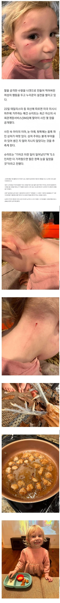

그..... 아니던데....
정신병자들 말고
문제될게 있어? 딸네미 공격한 축생인데
어딜가나 개병신들은 있구나 ㅋㅋ 딸 건드린데다 그대상이 치킨? 고민할필요가 있나?
시ㅡ발 닭대가리맘이 있다고 ? 에미 ㅋㅋ
와 ㅅㅂ 실명 안해서 진짜 다행이다 닭새끼 고문한다음에 튀겼어야했는데
그럼 핏줄 다 터져서 맛없어
??? 저게 논란거리인가? 내 자식 공격하는 짐승은 당연히 죽여야지.
어차피 잡아먹을거 조금 앞당겨진건데?
곱게 죽여서 먹어준것만 해도 감사해야지
근데 뭐 닭대가리가 뭔 죄가 있겠음 걍 운이 안좋았던거지
닭대가리인 죄
얼굴 상처는 흉터 남겠는데;
반려 ㅋㅋ
공격 안했어도 먹을거였는데
냠냠냠 풀어키운닭들 뼈살 엄청 단단하던데
애기 눈 안다쳐서 그나마 다행이네 ㅠ
개라도 이게 맞는데 하물며 닭?
명분이 생겼다 아이가 명분이
나도 어릴때 시골 할아버지한테 갔다가 개가 나 물어서 병원갔다왔는데 매달려 죽어있었던 기억이 나
가축이 왜 온순한 애들만 남아있는지 모르는 애들이군 ㅋㅋ
사냥개라던가 투견 투계 투우 등등 온순함과는 정반대 목적으로 개량된 종들이 얼마나 많은데.
세상이 좋아지니 지가 사람인지 동물인지 구분못하는 병신들이 계속 나타남
농장이잖여 애완동물이 아니고 가축임 나중에 결국 저렇게 됐을 운명인데 제 명을 재촉한 거
닭은 그저 본능에 충실하고 저 딸이 해당 영역이나 먼가에 침범해서 공격했을텐데... 참.. 닭의 입장에선 얼마나 어이없을까.. 마치 학창시절 인기있는애가 인기없는찐다 괴롭히다 그 찐따가 개빡쳐서 한대 때리니깐 여러 애들이 그 인기있는 애 걱정하며 나머지애들은 괴롭힌당한 찐따를 조패는 듯한 느낌 그런건가
그렇게 착한 닭만 살아남는거지...
그치만 우리집에 호랑이새끼가 침범했다고 물고 때리면 부모호랑이가 화나긴 하겠지...불쌍하고 맛있는 닭...
뭔 닭한테 감정이입을 하네
잡아먹힌 닭을 보며 과거이입을 하는 나
치킨맛있어 ㅠㅠ
뭐가 어이없어 어차피 공격 안했어도 닭고기 됐을건데
반려같은 소리하네
병신은 애미애비뿐인데
잡아먹힐 운명을 알고 반란 일으킨거임
성공했으면 혁명인데 까비
맛은 안정적이야
닭 크기가 토종닭보다 훨씬 더 크던데
칠면조랑 싸울 정도 되는 크기
그래서 살이 질기다보니 애 먹이기에는 다른 요리보다 너겟이 알맞겠네
잘못된건 아니긴한데 저렇게 인과관계를 뚜렷히 보여주는 스토리를 만드니까 좀 더 잔인하긴하네
아이 착하다 집에 가자

이쁘다고 키우던 닭 너겟을 앞에 두고 웃는 아이 사진이 상황과 안맞아서 좀 기괴하긴 하네
한국이면 할머니들 개빡쳐서 바로 백숙해버렸음
너겟보다는 통으로튀긴게맛잇는데
나도 개 키우지만 사람 공격하는 순간 끝이라고 생각함
자고로 금수보단 사람이 더 중한 법..
동서고금 금수가 자식보다 귀할수는 없지